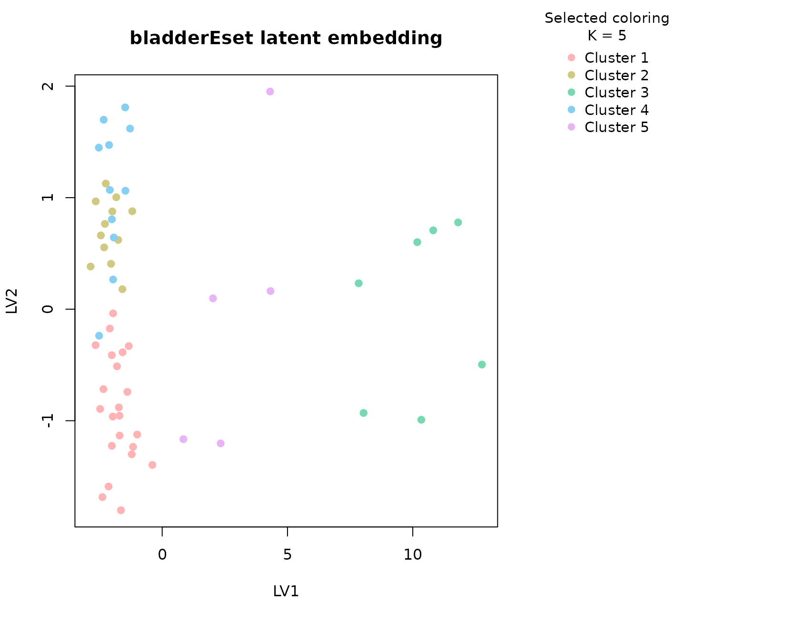
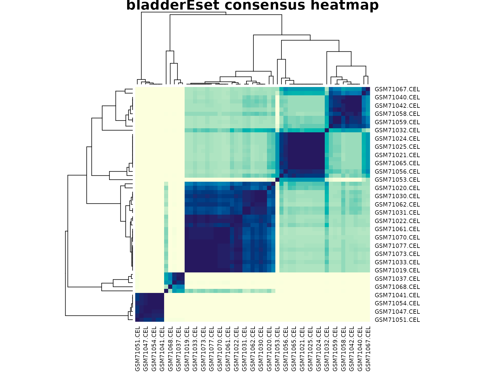

Background
bladderEset is distributed through the Bioconductor
bladderbatch experiment package and is widely used to
illustrate both biological heterogeneity and batch effects in bladder
cancer expression studies. uccdf ships a reduced version
called bladder_gene_panel that keeps a small set of highly
variable probe sets together with pathology labels and the processing
batch annotation.
This dataset is valuable because the interpretation is not one-dimensional. A cluster can reflect tumor state, pathology subtype, technical batch, or a mixture of those effects. That makes it a more realistic omics example than a perfectly separated textbook benchmark.
Objective
The objective is to test whether the reduced bladder expression panel supports a stable multi-cluster solution and to understand whether the recovered groups are better explained by pathology status, by technical batch, or by a blend of both. This matters because practical consensus clustering is often used in exactly this kind of confounded setting.
Data preparation
if (file.exists("data/bladder_gene_panel.rda")) {
load("data/bladder_gene_panel.rda")
} else if (file.exists("../data/bladder_gene_panel.rda")) {
load("../data/bladder_gene_panel.rda")
} else {
data(bladder_gene_panel, package = "uccdf")
}
analysis_bladder <- bladder_gene_panel[, c(
"sample_id", "202917_s_at", "217022_s_at", "207935_s_at", "211430_s_at",
"202409_at", "205916_at", "214677_x_at", "212768_s_at"
)]
head(analysis_bladder)
#> sample_id 202917_s_at 217022_s_at 207935_s_at 211430_s_at
#> GSM71019.CEL GSM71019.CEL 8.228346 12.224411 10.713120 12.447222
#> GSM71020.CEL GSM71020.CEL 5.927838 5.054316 10.029341 12.702998
#> GSM71021.CEL GSM71021.CEL 4.595349 6.405009 9.420920 7.082336
#> GSM71022.CEL GSM71022.CEL 5.840905 9.962041 7.058879 10.895846
#> GSM71023.CEL GSM71023.CEL 8.979690 11.608943 8.158368 10.810691
#> GSM71024.CEL GSM71024.CEL 5.377329 8.029013 11.633022 7.332524
#> 202409_at 205916_at 214677_x_at 212768_s_at
#> GSM71019.CEL 5.731426 4.256044 12.478996 10.165109
#> GSM71020.CEL 6.479970 4.312322 12.683614 6.626511
#> GSM71021.CEL 6.479847 4.934869 7.025796 4.736950
#> GSM71022.CEL 6.300991 4.504071 11.450320 8.168055
#> GSM71023.CEL 5.593393 4.479845 11.536120 7.425503
#> GSM71024.CEL 5.697530 4.382480 8.454204 8.417084Analysis
fit_bladder <- fit_uccdf(
analysis_bladder,
id_column = "sample_id",
candidate_k = 1:5,
n_resamples = 20,
n_null = 39,
row_fraction = 0.9,
col_fraction = 0.9,
seed = 808
)
fit_bladder$selection
#> $alpha
#> [1] 0.05
#>
#> $global_p_value
#> [1] 0.05
#>
#> $null_family
#> [1] "independence_marginal_null"
#>
#> $detected_structure
#> [1] TRUE
#>
#> $best_exploratory_k
#> [1] 5
#>
#> $best_supported_k
#> [1] 5
select_k(fit_bladder)
#> k stability null_mean null_sd stability_excess z_score p_value
#> 1 2 0.9195408 0.9373595 0.009396423 -0.01781865 -1.896321 0.975
#> 2 3 0.6115658 0.5442753 0.041417173 0.06729052 1.624701 0.075
#> 3 4 0.5546565 0.4673998 0.031868249 0.08725669 2.738044 0.050
#> 4 5 0.5486842 0.4425853 0.021586814 0.10609894 4.914986 0.025
#> supported objective
#> 1 FALSE -2.034950
#> 2 FALSE 1.404978
#> 3 TRUE 2.460785
#> 4 TRUE 4.593099Results
bladder_assign <- merge(
augment(fit_bladder),
bladder_gene_panel,
by.x = "row_id",
by.y = "sample_id",
all.x = TRUE
)
head(bladder_assign)
#> row_id cluster confidence ambiguity exploratory_cluster
#> 1 GSM71019.CEL 1 0.9415465 0.05845350 1
#> 2 GSM71020.CEL 1 0.8453090 0.15469099 1
#> 3 GSM71021.CEL 2 0.9593979 0.04060210 2
#> 4 GSM71022.CEL 1 0.9494775 0.05052250 1
#> 5 GSM71023.CEL 1 0.9550336 0.04496638 1
#> 6 GSM71024.CEL 2 0.9573365 0.04266348 2
#> exploratory_confidence exploratory_ambiguity assignment_mode selected_k
#> 1 0.9415465 0.05845350 selected 5
#> 2 0.8453090 0.15469099 selected 5
#> 3 0.9593979 0.04060210 selected 5
#> 4 0.9494775 0.05052250 selected 5
#> 5 0.9550336 0.04496638 selected 5
#> 6 0.9573365 0.04266348 selected 5
#> exploratory_k 202917_s_at 217022_s_at 207935_s_at 211430_s_at 202409_at
#> 1 5 8.228346 12.224411 10.713120 12.447222 5.731426
#> 2 5 5.927838 5.054316 10.029341 12.702998 6.479970
#> 3 5 4.595349 6.405009 9.420920 7.082336 6.479847
#> 4 5 5.840905 9.962041 7.058879 10.895846 6.300991
#> 5 5 8.979690 11.608943 8.158368 10.810691 5.593393
#> 6 5 5.377329 8.029013 11.633022 7.332524 5.697530
#> 205916_at 214677_x_at 212768_s_at outcome batch cancer
#> 1 4.256044 12.478996 10.165109 Normal 3 Normal
#> 2 4.312322 12.683614 6.626511 Normal 2 Normal
#> 3 4.934869 7.025796 4.736950 Normal 2 Normal
#> 4 4.504071 11.450320 8.168055 Normal 3 Normal
#> 5 4.479845 11.536120 7.425503 Normal 3 Normal
#> 6 4.382480 8.454204 8.417084 Normal 3 Normal
aggregate(
cbind(`202917_s_at`, `217022_s_at`, `207935_s_at`, `211430_s_at`,
`202409_at`, `205916_at`, `214677_x_at`, `212768_s_at`, confidence) ~ cluster,
bladder_assign,
function(x) round(mean(x, na.rm = TRUE), 2)
)
#> cluster 202917_s_at 217022_s_at 207935_s_at 211430_s_at 202409_at 205916_at
#> 1 1 8.94 10.94 8.33 11.42 6.64 4.45
#> 2 2 5.99 6.80 9.73 7.22 6.38 4.39
#> 3 3 12.48 11.54 9.62 12.70 8.35 11.28
#> 4 4 7.11 8.92 10.32 8.32 11.52 4.39
#> 5 5 10.34 10.74 9.06 11.43 9.28 7.03
#> 214677_x_at 212768_s_at confidence
#> 1 11.96 6.07 0.92
#> 2 7.44 4.26 0.92
#> 3 12.52 7.31 0.97
#> 4 9.12 4.53 0.82
#> 5 11.44 6.15 0.72
table(bladder_assign$cluster, bladder_assign$outcome)
#>
#> Biopsy mTCC Normal sTCC-CIS sTCC+CIS
#> 1 7 2 4 4 5
#> 2 2 0 4 4 2
#> 3 0 5 0 0 2
#> 4 0 2 0 7 2
#> 5 0 3 0 1 1
round(prop.table(table(bladder_assign$cluster, bladder_assign$outcome), margin = 1), 3)
#>
#> Biopsy mTCC Normal sTCC-CIS sTCC+CIS
#> 1 0.318 0.091 0.182 0.182 0.227
#> 2 0.167 0.000 0.333 0.333 0.167
#> 3 0.000 0.714 0.000 0.000 0.286
#> 4 0.000 0.182 0.000 0.636 0.182
#> 5 0.000 0.600 0.000 0.200 0.200
table(bladder_assign$cluster, bladder_assign$batch)
#>
#> 1 2 3 4 5
#> 1 2 4 3 4 9
#> 2 0 6 1 1 4
#> 3 5 0 0 0 2
#> 4 1 7 0 0 3
#> 5 3 1 0 0 1
round(prop.table(table(bladder_assign$cluster, bladder_assign$batch), margin = 1), 3)
#>
#> 1 2 3 4 5
#> 1 0.091 0.182 0.136 0.182 0.409
#> 2 0.000 0.500 0.083 0.083 0.333
#> 3 0.714 0.000 0.000 0.000 0.286
#> 4 0.091 0.636 0.000 0.000 0.273
#> 5 0.600 0.200 0.000 0.000 0.200
plot_embedding(fit_bladder, color_by = "selected", main = "bladderEset latent embedding")
plot_consensus_heatmap(fit_bladder, main = "bladderEset consensus heatmap")
Discussion
The bladder panel is more complicated than ALL, and that
is precisely why it is worth keeping in the tutorial set. The selected
solution is larger than two clusters, and the interpretation tables show
that no single explanatory factor fully accounts for every cluster. Some
groups are enriched for one pathology label, some are mixed, and some
show a noticeable batch preference. That means the consensus is
capturing real structure, but the structure is not purely biological in
the simple sense of one disease label per group.
This is an important practical lesson. In real omics work, a stable
cluster is not automatically a biological subtype. The bladder example
shows how uccdf helps with that distinction. The null
calibration tells us the multi-cluster pattern is stronger than a
column-permuted baseline, while the cross-tabulation against
outcome and batch makes it possible to inspect
whether the stability is driven by interpretable pathology, by technical
effects, or by a combination of both.
The heatmap is particularly useful here. Instead of a clean two-block layout, we usually see several consensus blocks with different levels of separation. That visual pattern matches the selection output: the data support multiple groups, but the boundaries are not equally sharp across all samples.
Interpretation
For bladderEset, the selected clusters should be
interpreted as stable expression-defined sample strata in a partially
confounded study. Some clusters track pathology more strongly, while
others appear to absorb residual batch or mixed heterogeneity. The right
takeaway is therefore not “these are definitive subtypes,” but rather
“these are the recurrent structures worth checking against pathology and
batch before making a biological claim.”